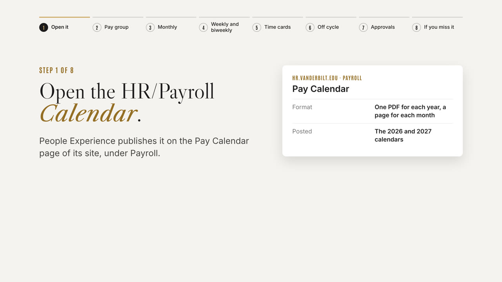
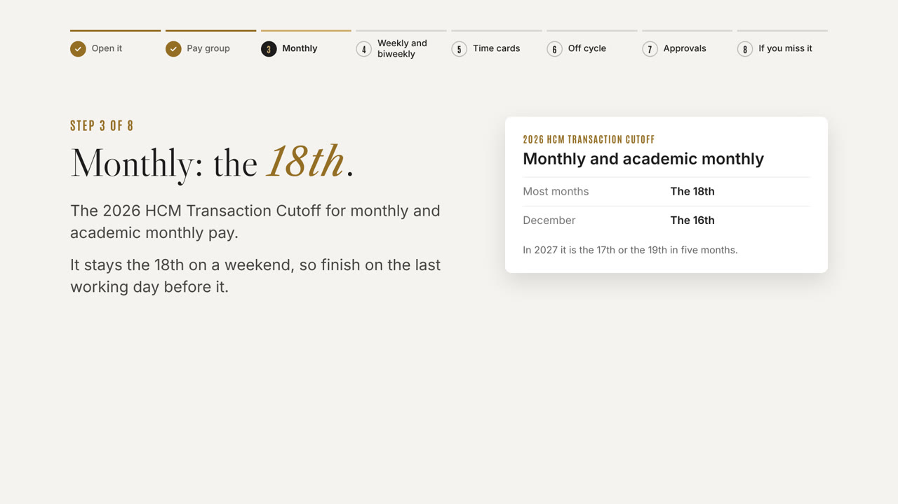
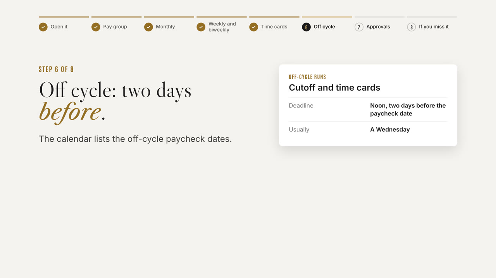
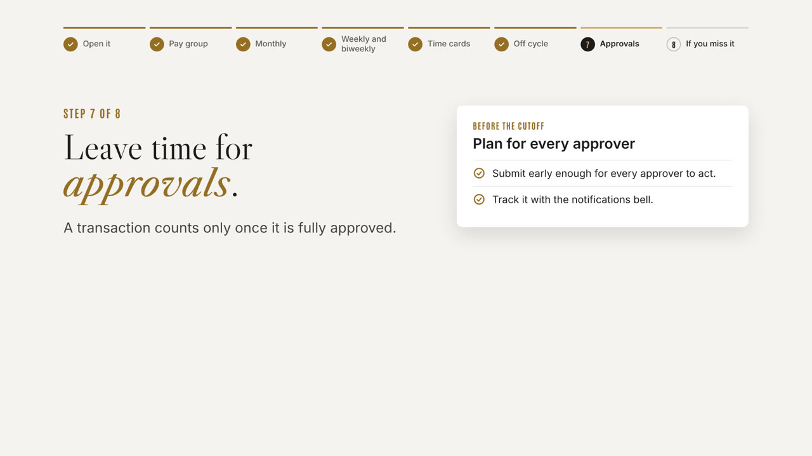

V.02 draftBuilt from Vanderbilt's published HR/Payroll Calendar and Oracle documentation. Not yet reviewed by Payroll; confirm the open items before release.
Screen checkConfirm in Vanderbilt's Oracle or UKG during a recorded demo: that the HR/Payroll Calendar is what HCMs call the shared administrative calendar, and who maintains it; where the Retro Change Cutoff is published; who is paid semi-monthly from 2027, and whether off-cycle runs continue.
1 · Intro
When to use it.
Watch first, then read the details below. Narrated, with the steps on screen.
Payroll runs on fixed dates. A transaction has to be approved before its cutoff, and a time card has to be in by its deadline, or the pay waits for the next run.
Vanderbilt publishes those dates in the HR/Payroll Calendar. This course shows where it is and how to read it.
Use this whenYou are planning when to submit a transaction, or you need to know whether a change will make this payroll.
2 · Walk through
How to read the calendar.
Check off each item as you read.
The deadlines on the 2026 calendar
Payroll
Paid
HCM Transaction Cutoff
Time Card Due
Weekly
The Friday after the pay period ends
The Friday a week before payday
Noon on the Monday after the period ends
Biweekly
The Friday after the pay period ends
The Friday a week before payday
Noon on the Monday after the period ends
Monthly and Academic Monthly
The last business day of the month
The 18th; December 16
None
Off Cycle
About twice a month
Noon, two days before the paycheck date
Noon, two days before the paycheck date
Watch-outs
Do not work from memory. Dates move around holidays, and the December cutoff is early.
Pending approvals do not pay. A change still waiting in approvals at the cutoff misses that payroll.
Open item: the Retro Change Cutoff that the costing courses use is not on the published calendar. Payroll or Finance to say where it is published.
Open item: the 2027 calendar adds a Semi Monthly payroll that no course covers, and lists no off-cycle runs. Payroll to say who is paid semi-monthly and what changes for HCMs.
Open item: confirm that the HR/Payroll Calendar is what HCMs call the shared administrative calendar, and who maintains it.
Official documentation
Vendor documentation describes the standard process. Vanderbilt's setup, codes, and rules in this course take priority.
Use when: You are planning when to submit a transaction, or you need to know whether a change will make this payroll. · System: Overview
Open the HR/Payroll Calendar.
Find your pay group.
Weekly: Monday to Sunday.
Biweekly: two weeks, Sunday to Saturday.
Monthly: the calendar month.
Academic Monthly: the 16th to the 15th.
Off Cycle: extra runs, about two a month.
Monthly pay: the cutoff is the 18th in most months.
Weekly and biweekly pay: the cutoff is the Friday a week before payday.
Time cards are due at noon on the Monday after the pay period ends.
Off-cycle runs: noon, two days before.
Submit early enough for approvals.
Know what happens if you miss it.
The deadlines on the 2026 calendar
Payroll
Paid
HCM Transaction Cutoff
Time Card Due
Weekly
The Friday after the pay period ends
The Friday a week before payday
Noon on the Monday after the period ends
Biweekly
The Friday after the pay period ends
The Friday a week before payday
Noon on the Monday after the period ends
Monthly and Academic Monthly
The last business day of the month
The 18th; December 16
None
Off Cycle
About twice a month
Noon, two days before the paycheck date
Noon, two days before the paycheck date
Watch-outs
Do not work from memory. Dates move around holidays, and the December cutoff is early.
Pending approvals do not pay. A change still waiting in approvals at the cutoff misses that payroll.
Open item: the Retro Change Cutoff that the costing courses use is not on the published calendar. Payroll or Finance to say where it is published.
Open item: the 2027 calendar adds a Semi Monthly payroll that no course covers, and lists no off-cycle runs. Payroll to say who is paid semi-monthly and what changes for HCMs.
Open item: confirm that the HR/Payroll Calendar is what HCMs call the shared administrative calendar, and who maintains it.
V.02 draft, updated Nov 18, 2026. Owner: Payroll. Sources: Vanderbilt HR/Payroll Calendar, 2026 and 2027 (People Experience, Pay Calendar page); Oracle: Overview of Payroll Definitions; Oracle: Recalculate Payroll for Retroactive Changes.Questions: pcb@vanderbilt.edu
HCM Academy detailed job aid · Start Here
Reading the HR/Payroll Calendar, step by step
Step by step with screenshots. Diagrams from the HCM Academy explainer video. The steps are the course's own.
01Open the HR/Payroll Calendar.
People Experience publishes it on the Pay Calendar page of its site (hr.vanderbilt.edu, under Payroll). There is one PDF for each year, with a page for each month. The 2026 and 2027 calendars are posted.

02Find your pay group.
Each row is one payroll. For each, the calendar gives the pay period, the paycheck date, the HCM Transaction Cutoff, and when time cards are due.
03Monthly pay: the cutoff is the 18th in most months.
In 2026 the HCM Transaction Cutoff for monthly and academic monthly pay is the 18th in every month but December, when it is the 16th. It stays the 18th even when that is a weekend, so finish on the last working day before it. In 2027 it is the 17th or the 19th in five months.

04Weekly and biweekly pay: the cutoff is the Friday a week before payday.
The HCM Transaction Cutoff falls seven days before the paycheck date in nearly every pay period. Holiday weeks move it.
05Time cards are due at noon on the Monday after the pay period ends.
This is the Time Card Due column for weekly and biweekly pay. In holiday weeks the deadline moves, often to 10am or to Tuesday. Monthly pay has no time card.
06Off-cycle runs: noon, two days before.
The calendar lists the off-cycle paycheck dates. For each one, the HCM Transaction Cutoff and the time card deadline are noon two days before, usually a Wednesday.

07Submit early enough for approvals.
A transaction counts only once it is fully approved. Leave time for every approver to act before the cutoff, and track it with the notifications bell.

08Know what happens if you miss it.
A change that arrives after payroll is calculated is picked up as a retroactive adjustment in a later run. The person may be paid late or need a correction.
V.02 draft, updated Nov 18, 2026.Questions: pcb@vanderbilt.edu
Course record
Owner and changes.
Owner
PayrollAll payroll and financial topics: payroll, time cards, pay changes, the payroll calendar, and costing.
Version
V.02 draftUpdated Nov 18, 2026
Review
Built from Vanderbilt's published HR/Payroll Calendar and Oracle documentation. Not yet reviewed by Payroll; confirm the open items before release.
What changed
Nov 18, 2026Added a narrated video and a detailed job aid with a picture for each step.
Nov 13, 2026Rewritten from Vanderbilt's published HR/Payroll Calendar for 2026 and 2027: where it is, each cutoff, when time cards are due, and off-cycle runs.
Nov 13, 2026Owner is now Payroll. It was shown as Payroll and Finance.